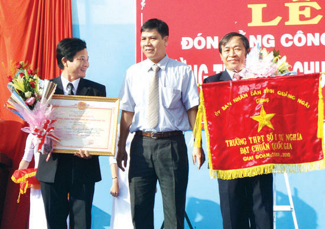
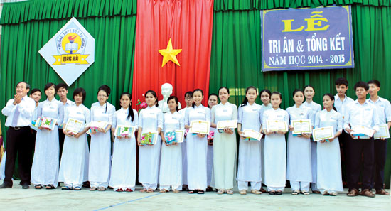

Tên gọi thân thương từ mái trường THPT số 1 Tư Nghĩa khắc ghi trong tâm trí của nhiều người. Trường THPT số 1 Tư Nghĩa được hình thành trên cơ sở tiếp quản cơ ngơi của Trường Trung học công lập Thu Xà (gọi tắt là Trường Trung học Thu Xà). Trường Trung học Thu Xà thành lập năm 1963 tại ấp Phước Long, xã Tư Thành, quận Tư Nghĩa, nay là thôn Phước Long, xã Nghĩa Hòa (Tư Nghĩa) và tổ chức giảng dạy chương trình đệ nhất cấp (tương đương bậc THCS hiện nay).
Năm học 1975-1976, Trường Trung học Thu Xà chính thức được đổi tên thành Trường cấp III Tư Nghĩa và bắt đầu một chặng đường mới. Năm 1981, đổi tên thành Trường PTTH số 1 Tư Nghĩa. Năm học 1994-1995, thực hiện chương trình thí điểm phân ban cùng với 214 trường trong toàn quốc, trường đổi tên thành Trường PTTH chuyên ban số 1 Tư Nghĩa. Đến năm học 2000-2001, chấm dứt việc thí điểm phân ban, trường được đổi tên thành Trường THPT số 1 Tư Nghĩa cho đến ngày nay.
Mục tiêu của nhà trường là xây dựng một môi trường giáo dục “Kỷ cương, thân thiện, chất lượng và hội nhập”, nên mỗi cán bộ quản lý và giáo viên đều nêu cao tinh thần trách nhiệm, đồng lòng thực hiện mục tiêu đã đề ra và không chạy theo thành tích. Nhờ đó, đến nay, 100% cán bộ, giáo viên của trường có trình độ đạt và trên chuẩn, có gần 67% giáo viên dạy giỏi cấp trường, gần 37% giáo viên dạy giỏi cấp tỉnh.
Tỷ lệ HS tốt nghiệp THPT và thi đỗ vào các trường ĐH, CĐ ngày càng cao. Đặc biệt, năm học 2004- 2005 trường có HS đạt điểm tuyệt đối 30/30 trong kỳ thi tuyển sinh vào đại học; năm 2009 được xếp vào tốp 200 trường có tổng điểm thi ĐH cao nhất trong toàn quốc. Tỷ lệ HS trúng tuyển nguyện vọng 1 vào các trường ĐH, CĐ luôn nằm trong số ít các trường dẫn đầu của tỉnh. Chỉ tính riêng 5 năm (2010- 2014), bình quân thí sinh toàn tỉnh trúng tuyển nguyện vọng 1 vào các trường ĐH, CĐ là 30%, trong khi đó Trường THPT số 1 Tư Nghĩa chiếm đến 37%.
Không chỉ chú trọng công tác giáo dục và đào tạo, trong những năm qua, nhà trường luôn đồng hành cùng với HS nghèo, tạo điểm tựa để các em vươn lên trong học tập. Với những kết quả đạt được trong 40 năm qua, Trường THPT số 1 Tư Nghĩa đã nhận được nhiều bằng khen, giấy khen. Tuy nhiên, đối với tập thể cán bộ quản lý và giáo viên nhà trường thì phần thưởng cao quý nhất và là nguồn động viên để tiếp tục phấn đấu, đó chính là niềm tin của đông đảo các bậc cha mẹ học sinh và nhân dân đối với nhà trường trong sự nghiệp “trồng người”, là sự vững vàng về tri thức của lớp lớp thế hệ học sinh khi bước vào ngưỡng cửa tương lai của cuộc đời.